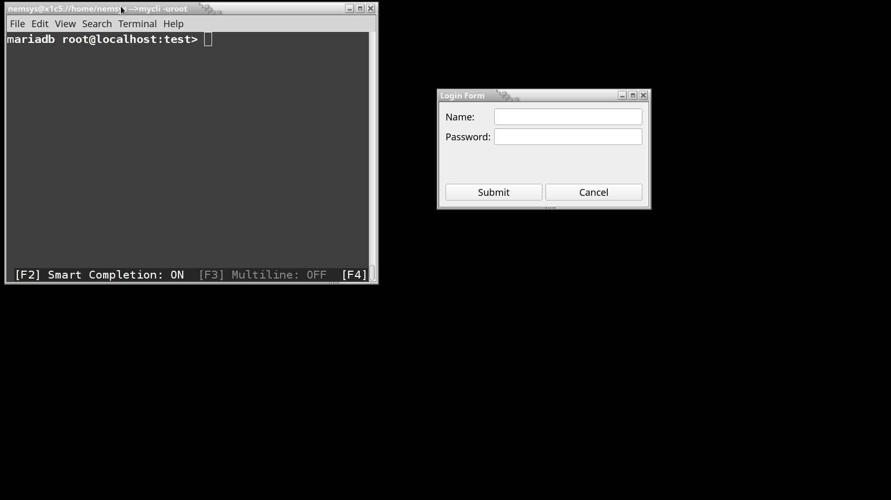

Keyboard shortcuts:
N/СпейсNext Slide
PPrevious Slide
OSlides Overview
ctrl+left clickZoom Element
If you want print version => add '
?print-pdf' at the end of slides URL (remove '#' fragment) and then print.
Like: https://wwwcourses.github.io/...CourseIntro.html?print-pdf
Created for

Iva E. Popova, 2022-2023,

Introduction to Signals And Slots
Signals And Slots Overview
What are Signals And Slots?

- Signals and slots are used for communication between objects.
- For example, if a user clicks a Close button, we probably want the window's close() function to be called.
- A signal is s notification that the event has happened
- A slot is a function that is called, when that event occurs.
- In order to establish communication between objects, we connect a signal to a slot to achieve the desired action
What are Signals And Slots?
- A Signal is a special object property that can be emitted in response to a event.
- Usually, we emit signals when the object's internal state has changed.
- A Slot is an object method that can receive a signal and act in response to it.
- In fact, a slot can be not only a Qt object method, it can be any Python callable.
- When a signal is emitted, the slots connected to it are usually executed immediately
Signals and Slots Example
- A QPushButton has a clicked signal that is emitted whenever the button is clicked by a user.
- The QWidget class has a close() slot that causes it to close if it's a top-level window.
- We could connect the two like this:
self.btn_cancel = qtw.QPushButton('Cancel')
self.btn_cancel.clicked.connect(self.close)
Different combinations of signals and slots
- One signal can be connected to one or many slots
- If a signal is connected to several slots they will be executed one after the other, in the order they have been connected, when the signal is emitted.
- Many signals can be connected to the same slot
- A signal can be connected to other signals
- Connections can be removed
Common predefined Signals and Slots
- All buttons have next signals and slots: QAbstractButton Slots and Signals
- QLineEdit object has: QLineEdit Slots And Signals
- All QWidget objects have next QWidget Slots and QWidget Signals
Passing data between signals and slots
Passing data between signals and slots
- Signals can also pass data to the slots they are connected.
- For example, QLineEdit object has a
textChangedsignal that sends the text entered into the widget along with the signal - The QLineEdit object also has a
setText()slot that accepts a string argument. We could connect them like this:
self.line_edit1 = qtw.QLineEdit()
self.line_edit2 = qtw.QLineEdit()
self.line_edit1.textChanged.connect(self.line_edit2.setText)
self.mainLayout = qtw.QVBoxLayout()
self.mainLayout.addWidget(self.line_edit1)
self.mainLayout.addWidget(self.line_edit2)
self.setLayout(self.mainLayout)
Task: Print in console the text in a lineEdit
- Create a Widget with 1 QLineEdit object (
line_edit1) in it - We want on every change to the content of
line_edit1that content to be printed in the console.
Solution
Click on "view raw" link at gist's bottom right corner to view the code, ready for copy-paste :)
- Signals can even be connected to other signals, for example:
- When you connect a signal to another signal, the event and data are passed from one signal to the next
self.line_edit1.editingFinished.connect(lambda: print('Edit Done'))
self.line_edit2.returnPressed.connect(self.line_edit1.editingFinished)
Custom signals and slots
Custom slots
Signals and Slots Type-safety
- Unlike Python, C++ is a statically typed language, which means that all variables and function parameters must be given a type ( string , integer , float ,...) on declaration time and any value stored in the variable or passed to that function must have a matching type.
- Native Qt signals and slots are type-safe.
- Consider next example: we tried to connect line_edit textChange signal to btn_change clicked signal, but an error is thrown, because textChanged emits a string, and clicked signal on button (which we want to use as a slot) emits a Boolean not string.
self.line_edit.textChanged.connect(self.btn_change.clicked)
# QObject::connect: Incompatible sender/receiver arguments
# QLineEdit::textChanged(QString) --> QPushButton::clicked(bool)
# TypeError: connect() failed between textChanged(QString) and clicked()
Custom Slots
- Any Python callable can play the role of a slot.
- Custom slots are called when a signal is emitted.
- They are called with the sender object as the first argument and the signal arguments as the second and third arguments.
- The sender object is the object that emits the signal.
- But when the slot is a Python callable, there will be no type-error as Python is dynamically typed language
- Of course, an error will be thrown if did not pass enough arguments to the slot (note, that if we pass more arguments than declared there will be no error, as Qt will throw them away)
self.line_edit.textChanged.connect(self.some_slot)
def some_slot(signal, text, x):
print(text, x)
# TypeError: some_slot() missing 1 required positional argument: 'x'
Type-safety using slots decorators
- But QtCore contains a pyqtSlot() function, which we can use to decorate a Python callable as a slot.
- pyqtSlot() is a decorator that takes a Python callable and returns a slot object.
- The slot object is a wrapper around the Python callable that can be connected to a signal.
- Using the pyqtSlot() decorator allows us to specify the type of the arguments that will be passed to the slot.
@qtc.pyqtSlot(str)
def some_slot(*args):
for arg in args:
print(arg)
Custom Signals
Defining Custom Signals
- Custom signals are defined using the
pyqtSignal()function. - pyqtSignal() returns a signal object, which is is a wrapper around the Python callable that can be connected to a slot.
- Custom signals are defined as class attributes.
- Custom signals have the emit()method, which is used to emit the signal.
- Reference:
- Defining New Signals with pyqtSignal
- emit
# create custom signal which will carry a string data type data:
sig_submit = qtc.pyqtSignal(str)
@qtc.pyqtSlot(bool)
def onSubmit(self):
self.sig_submit.emit(self.edit.text())
self.close()
Sharing data between widgets using custom signals and slots
Sharing data between widgets using custom signals and slots
- At its core, the signals and slots mechanism can be seen as a way for any two objects in an application to communicate while remaining loosely coupled
Why?
- Suppose you have a program that pops up a form window.
- When the user finish filling the form and submits it, we need to get the entered data back to the main application class for processing.
- There are a few ways we could approach this. One is the main application to watch for click events on the pop-up window's Submit button, then grab the data from its fields before destroying the dialog
- But that approach requires the main form to know all about the pop-up dialog's widgets and any refactoring of the pop-up would risk breaking code in the main application.
Demo: tightly-coupled approach
Note that MainWindow must know form's implementation
Demo: loosely-coupled approach
Note that MainWindow don't care about form's implementation, it just pass and receive data
Hands on: Using MySQL With PyQt6 Widgets
Hands on LoginForm: Using MySQL With PyQt6 Widgets
Overview
- When we need our Qt app to work with database, we can use:
- Python's DB-API compliant modules, like MySQL Connector - this is a kind of universal approach which works on any Python app.
- Qt's SQL API, which is the preferred way for PyQt applications, especially when we use the Qt's model/view architecture (discussed later in these course). But note that to use MySQL with Qt SQL API you must build QMYSQL Plugin yourself
- In next examples, we will use the Python's MySQL Connector, but later in the course we will discuss the Qt's approach.
Create users table
DROP TABLE IF EXISTS `users`;
/*!40101 SET @saved_cs_client = @@character_set_client */;
/*!40101 SET character_set_client = utf8 */;
CREATE TABLE `users` (
`id` int(11) NOT NULL AUTO_INCREMENT COMMENT 'primary key',
`username` varchar(50) NOT NULL,
`email` varchar(20) NOT NULL,
`password` varchar(45) NOT NULL,
PRIMARY KEY (`id`),
UNIQUE KEY `email` (`email`)
) ENGINE=InnoDB AUTO_INCREMENT=4 DEFAULT CHARSET=utf8;
/*!40101 SET character_set_client = @saved_cs_client */;
Insert some data
INSERT INTO `users` VALUES
(1,'Maria','maria@gmail.com','maria123'),
(2,'Pesho','peho@gmail.com','pesho123'),
(3,'Ivan','ivan@gmail.com','ivan123');
Registration Form demo - CLI, no PyQt
References
Exercises
Exercises
Login Form Task
- Create a simple Login Form which functions as shown in GIF bellow: 
- TIP: use QMessageBox.information() and QMessageBox.critical() dialog widgets.
{kind=link}